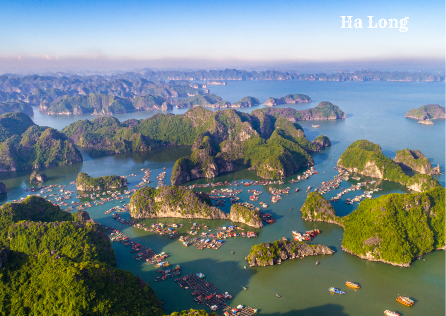

Miền Bắc
Sapa - Lào Cai
6 Apr 2024
Nằm dưới chân dãy Hoàng Liên Sơn hùng vĩ và chỉ cách Hà Nội
5 - 6 giờ di chuyển bằng đường cao tốc, Sa Pa là điểm đến
lý tưởng quanh năm. Ngoài những thửa ruộng bậc thang vào
mùa lúa chín, Sa Pa còn hút khách nhờ vẻ đẹp của nhiều điểm
đến khác.
 Nguyễn Hữu Việt
Nguyễn Hữu Việt

Miền Bắc
Bãi Biển Sầm Sơn - Thanh Hóa
6 Apr 2024
Sầm Sơn là bãi biển nổi tiếng nhất của Thanh Hóa, cách Hà
Nội khoảng 180 km và TP Thanh Hóa khoảng 16 km. Bãi biển
Sầm Sơn có hình trăng khuyết, chạy dài 9 km từ chân núi
Trường Lệ đến xã Quảng Cư (thị xã Sầm Sơn), rộng hàng nghìn
mét, bằng phẳng, cát mịn, không có chỗ quá sâu, lầy thụt
hoặc đá ngầm.
Nguyễn Hữu Việt

Miền Bắc
Bãi Biển Đồ Sơn - Hải Phòng
6 Apr 2024
Đồ Sơn, một thiên đường nghỉ dưỡng tại Hải Phòng, nơi biển
xanh, cát trắng, và khung cảnh thiên nhiên thơ mộng hòa
quyện. Đến với nơi đây bạn sẽ được thỏa thích tham gia các
hoạt động dưới nước, thưởng thức các món hải sản tươi ngon
và tham quan nhiều điểm du lịch nổi tiếng khác. Nhanh tay
ghi lại những kinh nghiệm du lịch Đồ Sơn tự túc và lên lịch
trình cho mình thôi nào!
A Phiên

Miền Bắc
Vịnh Hạ Long - Quảng Ninh
6 Apr 2024
Hạ Long - Một trong những địa điểm du lịch ‘nghe thôi đã
biết đẹp’ tại khu vực phía Bắc. Sở hữu vịnh Hạ Long đẹp
‘nghiêng nước nghiêng thành’ cùng nhiều hang động và bãi
biển hấp dẫn, đây chính là địa điểm mà rất nhiều du khách
mong muốn ghé thăm một lần. Và những kinh nghiệm du lịch Hạ
Long dưới đây chắc chắn sẽ giúp cho chuyến du ngoạn của bạn
thêm phần hoàn hảo.
Nguyễn Hữu Việt

Miền Bắc
Núi Yên Tử – Quảng Ninh
6 Apr 2024
Núi Yên Tử còn được biết đến là một địa điểm du lịch tâm
linh vô cùng nổi tiếng với hệ thống các di tích lâu đời.
Đến đây, du khách không chỉ được khám phá thiên nhiên tươi
đẹp mà còn được hòa mình vào một không gian linh thiêng.
Giúp bạn giải tỏa được nhiều áp lực và căng thẳng trong
cuộc sống thường ngày.
Nguyễn Hữu Việt

Miền Bắc
Tam Đảo - Vĩnh Phúc
6 Apr 2024
Đến đây dù vào mùa nào du khách cũng được tận hưởng không
khí biến chuyển 4 mùa trong ngày. Tam Đảo là một trong
những khu nghỉ mát được người Pháp trước kia yêu thích.
Hiện tại, Tam Đảo sở hữu cảnh quan núi non và nhiều công
trình mới kiểu châu Âu, là điểm phượt phù hợp với những du
khách muốn tránh xa thành thị vào cuối tuần.
A Phiên

Miền Bắc
Ba Vì - Hà Nội
6 Apr 2024
Ba Vì là huyện thuộc vùng bán sơn địa, nằm về phía tây bắc
thủ đô Hà Nội. Phía đông giáp thị xã Sơn Tây, phía nam giáp
tỉnh Hòa Bình, phía tây giáp tỉnh Phú Thọ và phía Bắc giáp
tỉnh Vĩnh Phúc. Ba Vì được thiên nhiên ưu đãi ban tặng sơn
thuỷ hữu tình, với hệ sinh thái phong phú. Địa hình đa dạng
có cả núi, rừng, thác, suối, sông, hồ cùng các danh lam
thắng cảnh nổi tiếng.
Nguyễn Hữu Việt

Miền Bắc
Tràng An - Ninh Bình
6 Apr 2024
Chẳng có lý do gì để lỡ hẹn với Tràng An, Ninh Bình - nơi
được ca tụng với mỹ danh “tiên cảnh chốn nhân gian”. Hãy
cùng Klook khám phá những điểm nhấn tại Tràng An, Ninh Bình
nhé.
Nguyễn Hữu Việt

Miền Bắc
Thác Bản Giốc - Cao Bằng
18 Apr 2024
Thác Bản Giốc giống như một dải lụa trắng giữa rừng núi
trùng điệp bởi nơi đây sở hữu dòng chảy mãnh liệt, đổ từ
trên cao xuống tung bọt trắng xóa, tạo nên khung cảnh hùng
vĩ, tuyệt đẹp. Thác Bản Giốc mỗi thời điểm lại mang một vẻ
đẹp riêng, lúc nào cũng đẹp.
Nguyễn Hữu Việt